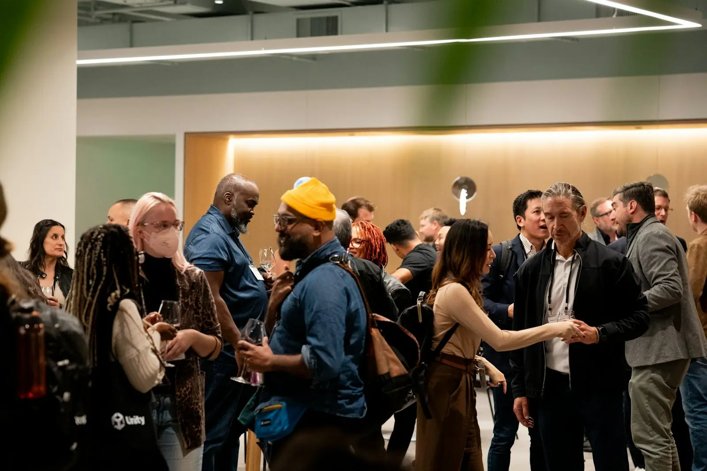

Seconde édition · Jeudi 26 novembre 2026
Une journée au cœurde l'industrie duale
Tables rondes, keynotes, sessions de pitch, espace exposants et learning expeditions rythmeront cette journée entièrement consacrée à l'innovation duale et à la souveraineté technologique.
Des technologies au service du civil et de la défense
L'industrie duale conçoit des technologies dont les applications servent à la fois les marchés civils et les besoins de défense et de sécurité. Le quantique, le spatial, la robotique, l'intelligence artificielle et les matériaux avancés en sont les principales filières.
L'expérience DualTech
Une journée,six formats
Tables rondes, keynotes, pitch sessions, expositions, ateliers et learning expeditions : DualTech met en lumière, tout au long de la journée, les acteurs des filières stratégiques à double usage.

03Photos d'illustration.
Programme du 26 novembre
Les temps fortsde la journée
Tables rondes, keynotes, sessions de pitch, espace exposants et learning expeditions rythmeront cette journée entièrement consacrée à l'innovation duale et à la souveraineté technologique.
Voir le programme complet- 09h10Keynote
Allocution d'ouverture
Stéphane Boujnah, CEO et Chairman of the Managing Board d'Euronext
- 09h30Table ronde
Industrie de défense, quelles innovations pour préparer les conflits de demain ?
Thales, MBDA, Safran AI et GICAT autour de la table
- 11h00Keynote
Recherche, investissement et commande : quel nouveau modèle pour l'innovation de défense ?
Emmanuel Chiva, Président-directeur général de l'ONERA
- 14h15Table ronde
Investir dans la New defence : effet de mode ou tendance de fond ?
Expansion, Eurazeo Tech, Aldoria et Rothschild & Co
- 17h15Temps fort
Remise du Prix de l'Innovation Duale
Trois lauréats en Robotique, Santé et Deeptech
- 18h15Keynote
Souveraineté technologique : le Dual-use au cœur de la nouvelle stratégie européenne d'innovation
Stéphane Ouaki, European Innovation Council and SMEs Executive Agency (EISMEA)
Écosystème
Ils soutiennentDualTech
Institutions publiques, acteurs du financement, organisations industrielles, entreprises et médias spécialisés accompagnent DualTech.
Associer votre organisationS'inscrire à DualTech
400 places sont disponibles sur inscription préalable. Chaque demande est examinée par l'organisation avant l'envoi de la confirmation définitive de participation.